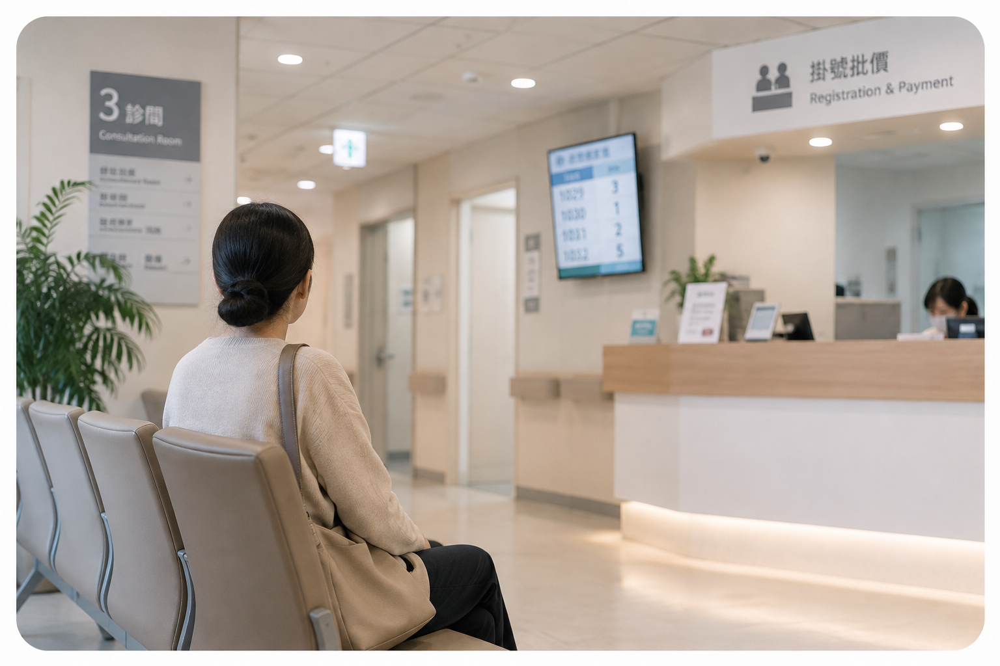
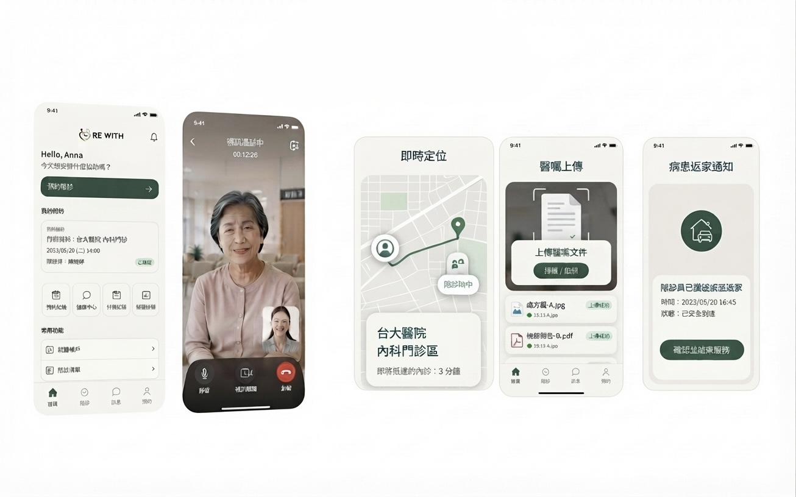
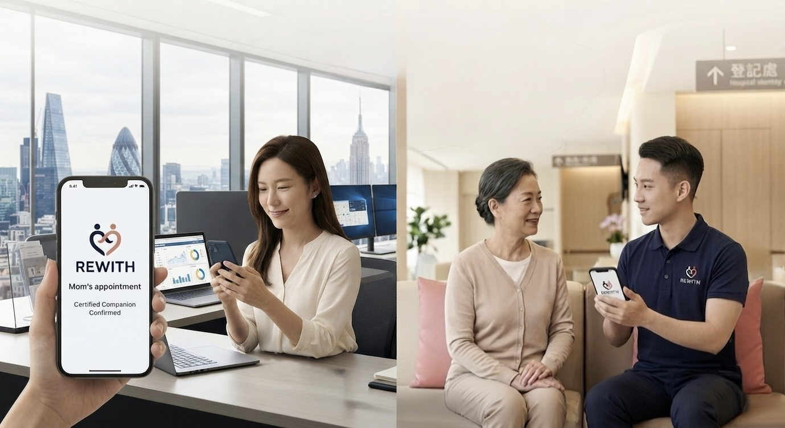

01 · 真實案例
我曾經就是那個需要成年人陪診的人。
我曾經因為預防性的醫療手術，需要接受全身麻醉。
我需要的不是護理師，也不是看護。
我只需要一個正常的成年人：陪我到醫院、完成流程、等我恢復，確認我能安全回家。
家人當時各自有醫療問題，有的也人在海外。我不想增加他們的負擔。
最後，我請一位朋友陪我完成。
那如果……沒有這位朋友呢？
這就是 RE WITH 的起點。
這就是 RE WITH 的起點。

就醫陪伴・陪診服務平台
有些醫療行程，不需要看護。
只需要一個值得信任的人，陪你走完。
 8E397198-8475-4462-A96E-2986FEDD8659.PNG)
我曾經因為預防性的醫療手術，需要接受全身麻醉。
我需要的不是護理師，也不是看護。
我只需要一個正常的成年人：陪我到醫院、完成流程、等我恢復，確認我能安全回家。
家人當時各自有醫療問題，有的也人在海外。我不想增加他們的負擔。
最後，我請一位朋友陪我完成。

單身、獨居、子女在海外、家人住在不同城市，醫療過程中需要陪伴的人，只會越來越多。
輸入醫院、日期與需求，找到符合條件的認證陪診員，完成預約與付款。

陪診員不執行醫療行為。醫療專業人員與一般陪診員完全區隔。
門診・檢查・候診・情緒陪伴
特定檢查・手術前後・麻醉後陪同
護理師及符合資格的醫事人員
不能每一次都回來，但仍然可以替父母安排一次安心的就醫陪伴。

單身、頂客、孕婦、獨居長者，或家人身處不同城市與海外——不是沒有家人，而是家人不一定能在需要的那一天出現。
由經過認證的陪診員，協助完成預約、到院陪診與安全返家，讓原本只能依靠家人的陪伴，成為可以放心託付的服務。
陪診需求存在於不同人生階段與家庭情境。
姚妍萱｜Founder of Re-Re
我曾經就是那個需要一個成年人陪診的人。從十幾歲到現在，我人生中有過很多次一個人走進醫院、接受治療與手術。
所以我知道，陪診不是想像出來的需求。
我希望在家人無法到場時，患者仍然可以委託一個值得信任的人。
我們希望把一個真實存在的需求，變成一套可以被信任、被使用，也可以持續擴大的服務。
從認證制度、服務標準到陪診員網路與平台資料，逐步建立醫療陪伴的服務基礎。
你不是一個人，我們與你一起。
當家人無法到場，委託一個值得信任的人，陪你完成一次就醫。